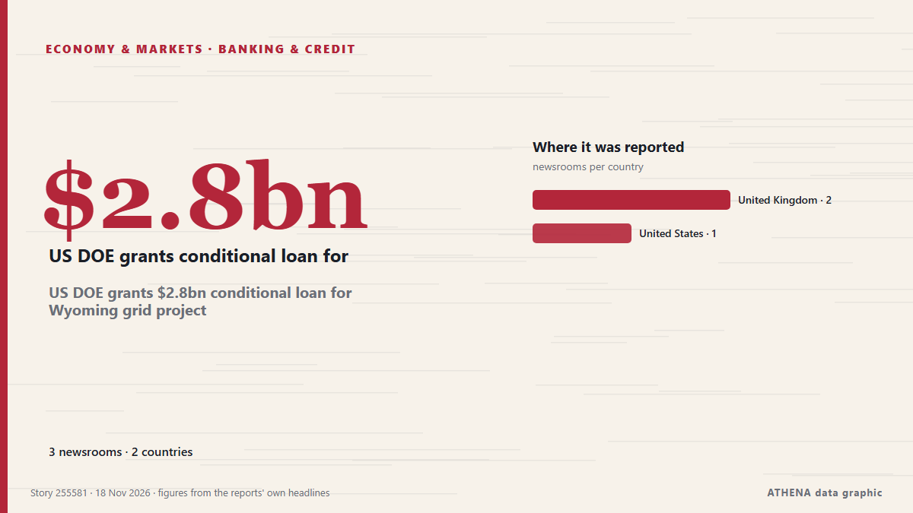

Τράπεζες & πίστη
ΧορηγούμενοΠαρουσιάζεται από  Cybernetics and Artificial Intelligence Lab Welcome to the Cybernetics and Artificial Intelligence Laboratory, established at the Department of Business Administration of the National and Kapodistrian University of Athens. The lab is headed by Professor Dimitrios Thomakos. The lab aims to do research that can be published in top venues. Our research uses tools and methods of Artificial Intelligence, and lies in the following areas: - Forecasting - Decision making - Cyber security - Finance We are always looking forward to collaborating with exceptional students!
Cybernetics and Artificial Intelligence Lab Welcome to the Cybernetics and Artificial Intelligence Laboratory, established at the Department of Business Administration of the National and Kapodistrian University of Athens. The lab is headed by Professor Dimitrios Thomakos. The lab aims to do research that can be published in top venues. Our research uses tools and methods of Artificial Intelligence, and lies in the following areas: - Forecasting - Decision making - Cyber security - Finance We are always looking forward to collaborating with exceptional students!
| 6 Νοε | 0 |
|---|---|
| 7 Νοε | 1 |
| 8 Νοε | 0 |
| 9 Νοε | 0 |
| 10 Νοε | 0 |
| 11 Νοε | 0 |
| 12 Νοε | 0 |
| 13 Νοε | 1 |
| 14 Νοε | 0 |
| 15 Νοε | 3 |
| 16 Νοε | 9 |
| 17 Νοε | 6 |
| 18 Νοε | 4 |
| 19 Νοε | 0 |
Οι τίτλοι των ειδήσεων παρουσιάζονται στα αγγλικά, όπως δημοσιεύτηκαν.

US DOE grants $2.8bn conditional loan for Wyoming grid project
The US DOE Office of Energy Dominance Financing has announced up to $2.8bn conditional loan commitment for the Wyoming Intertie project. από Energy Monitor
European Commission proposes up to $49B in new loan package for Ukraine in 2027
Package would provide up to $27B in military aid, $22B in budget support, cover roughly two-thirds of Ukraine’s additional financing needs. από Anadolu Agency (English)
Cork couple 'who got an ordinary mortgage' take High Court action over interest rate
The action is being regarded as a test case for those who took out bank mortgages which were subsequently taken over by other entities and who now face paying high interest rates. από Irish Examiner
EU proposes new €45bn Ukraine loan for 2027
New cash is ‘best way to give Ukraine a strong hand at the negotiation table' από Euractiv
Deutsche Bank flagged $582m in suspicious Epstein-linked transactions, leaked files reveal
The investigation, titled Inside Deutsche Bank, examined more than 15 million leaked files, including internal emails, compliance reports and financial records, reports Forbes. από The Business Standard (Bangladesh) (working feed)
'We can turn innovation into opportunity': Lloyds Banking Group and University of Leeds launch strategic partnership
Lloyds Banking Group and the University of Leeds have launched a partnership designed to turn research and innovation into commercial opportunities in Yorkshire. από Yorkshire Post
Deutsche Bank processed $582 million in suspicious Epstein-linked transactions
German banking giant Deutsche Bank processed approximately $582 million in transactions flagged as suspicious in connection with convicted sex offender Jeffrey Epstein, according to newly leaked… από AzerNews
Palestinian woman, 72, shot dead by Israeli settlers in West Bank, health ministry says
Palestinians say there was an attack by settlers in al-Duyuk al-Tahta, while the Israeli military says the settlers fired after being attacked. από BBC News
Paraguay's ousted president moved to prison after luxury cell exposé
Former Paraguayan President Santiago Peña was moved to a military prison after reports revealed privileged detention conditions, officials said. από UPI World News
President of Uzbekistan concludes visit to Oman
Muscat: President Shavkat Mirziyoyev of the Republic of Uzbekistan, and his accompanying delegation left the country today following a two-day state visit to the Sultanate of Oman.... από Oman Observer
New Zealand Central Bank Warns of Rising Global Risks, Private Credit Exposure
New Zealand’s central bank warned on Tuesday that global financial stability risks continue to rise, with growing vulnerabilities in the non-bank lending sector driven by increased private credit… από Insurance Journal
Global banks set to enter 2027 on strong footing, Moody's report says
KUALA LUMPUR: Global economic growth is expected to slow over the next two years as geopolitical tensions, trade disruptions and uncertainty surrounding the artificial intelligence (AI) boom threaten… από New Straits Times
A technical issue at JPMorgan Chase triggers online banking delays for major US banks
JPMorgan Chase blamed a software bug in its own on-premise hardware for Monday’s online banking problems at several big US banks. από The Next Web
US banking app users report outages from software bugs
WASHINGTON: American users of several major banking apps and online portals reported outages on Monday, according to monitoring site Downdetector.com, with one institution ruling out a cyberattack as… από New Straits Times
Downdetector reports outages at major US banks
User reports on Monday indicated problems at JPMorgan Chase, Bank of America, U.S. από The Korea Times
Norway’s biggest bank DNB to raise card fees
Prices in Norway continue to rise, and some increases can easily go unnoticed. από The Local Norway
'Dalit oppression, land grab': BJP hits back at Akhilesh over 'Damdar Dalit' remarks
In response to Akhilesh Yadav's recent appeal to the Dalit community, BJP leaders have launched a series of critiques against the Samajwadi Party chief. από Times of India
‘Escaping extreme poverty and Naxalism has improved tribal lives’, says PM Modi
PM cites World Bank report to claim that 50 crore Indians have escaped extreme poverty over last 12 to 13 years; says 125 districts were Naxal-affected in 2014, as previous regimes closed their eyes… από The Hindu
Kenya: Ruto Hits Back At Opposition Over SGR Corruption Claims
[Capital FM] Nairobi -- President William Ruto has challenged opposition leaders over their interpretation of a World Bank report that raises concerns about corruption and procurement weaknesses in… από AllAfrica